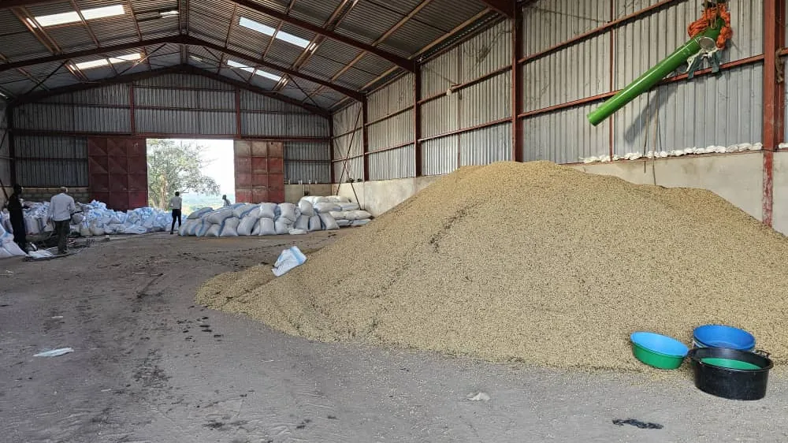

Inside the warehouse: how grain is cleaned, dried and stored
Draft — for client review before publishing.
Grain arriving from the field goes through the same sequence every time: cleaning to remove chaff and debris, a moisture check before it's allowed into storage, grading, and bagging ahead of the farm's 450 sqm warehouse.
A silo, weighbridge and grading facility are planned to expand this capacity; today's handling runs through the farm's existing warehouse and field equipment. See the full chain on the Quality, handling & traceability page.
